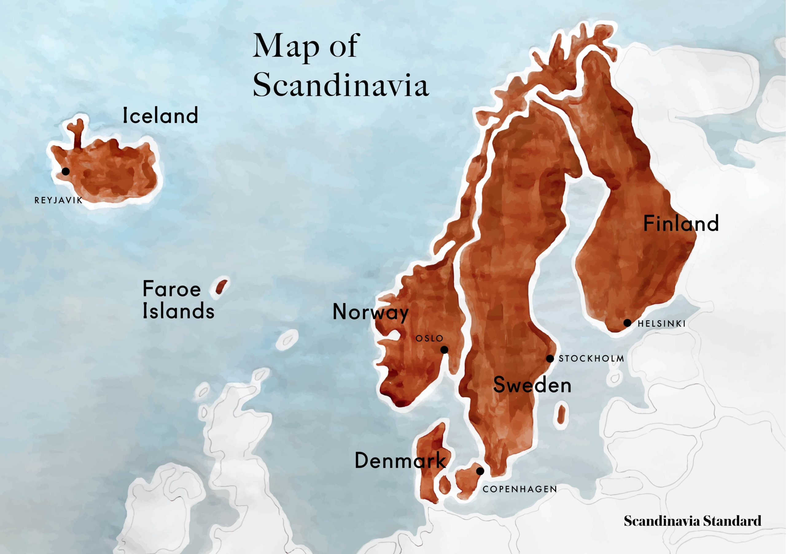

For the North Germanic ethnic group from which most Vikings originated, see Norsemen. For other uses, see Vikings (disambiguation).
| name | vikings |
|---|---|
| Contemporary countries | Denmark/Sweden/Iceland/Finland |
| Geography | Mountains/Peninsula Baltic/ SeaNorth/ Sea |
| map |  |
Vikings is the modern name given to seafaring people primarily from Scandinavia (present-day Denmark, Norway and Sweden), who from the late 8th to the late 11th centuries raided, pirated, traded and settled throughout parts of Europe. They also voyaged as far as the Mediterranean, North Africa, the Middle East, and North America. In some of the countries they raided and settled in, this period is popularly known as the Viking Age, and the term "Viking" also commonly includes the inhabitants of the Scandinavian homelands as a collective whole. The Vikings had a profound impact on the early medieval history of Scandinavia, the British Isles, France, Estonia, and Kievan Rus'.
Expert sailors and navigators aboard their characteristic longships, Vikings established Norse settlements and governments in the British Isles, Ireland, the Faroe Islands, Iceland, Greenland, Normandy, the Baltic coast, and along the Dnieper and Volga trade routes in what is now European Russia, Belarus[11] and Ukraine,[12] where they were also known as Varangians. The Normans, Norse-Gaels, Rus' people, Faroese and Icelanders emerged from these Norse colonies. The Vikings also voyaged to Constantinople, Iran,[13] and Arabia.[14] They were the first Europeans to reach North America, briefly settling in Newfoundland (Vinland). While spreading Norse culture to foreign lands, they simultaneously brought home slaves, concubines and foreign cultural influences to Scandinavia, profoundly influencing the genetic[15] and historical development of both. During the Viking Age the Norse homelands were gradually consolidated from smaller kingdoms into three larger kingdoms: Denmark, Norway and Sweden. The Vikings spoke Old Norse and made inscriptions in runes. For most of the period they followed the Old Norse religion, but later became Christians. The Vikings had their own laws, art and architecture. Most Vikings were also farmers, fishermen, craftsmen and traders. Popular conceptions of the Vikings often strongly differ from the complex, advanced civilisation of the Norsemen that emerges from archaeology and historical sources. A romanticised picture of Vikings as noble savages began to emerge in the 18th century; this developed and became widely propagated during the 19th-century Viking revival.[16][17] Perceived views of the Vikings as violent, piratical heathens or as intrepid adventurers owe much to conflicting varieties of the modern Viking myth that had taken shape by the early 20th century. Current popular representations of the Vikings are typically based on cultural clichés and stereotypes, complicating modern appreciation of the Viking legacy. These representations are rarely accurate—for example, there is no evidence that they wore horned helmets, a costume element that first appeared in Wagnerian opera.
The most important primary sources on the Vikings are contemporary texts from Scandinavia and regions where the Vikings were active.[129] Writing in Latin letters was introduced to Scandinavia with Christianity, so there are few native documentary sources from Scandinavia before the late 11th and early 12th centuries.[130] The Scandinavians did write inscriptions in runes, but these are usually very short and formulaic. Most contemporary documentary sources consist of texts written in Christian and Islamic communities outside Scandinavia, often by authors who had been negatively affected by Viking activity.
The Norse of the Viking Age could read and write and used a non-standardised alphabet, called runor, built upon sound values. While there are few remains of runic writing on paper from the Viking era, thousands of stones with runic inscriptions have been found where Vikings lived. They are usually in memory of the dead, though not necessarily placed at graves. The use of runor survived into the 15th century, used in parallel with the Latin alphabet.
The last known people to use the Runic alphabet were an isolated group of people known as the Elfdalians, that lived in the locality of Älvdalen in the Swedish province of Dalarna. They spoke the language of Elfdalian, the language unique to Älvdalen. The Elfdalian language differentiates itself from the other Scandinavian languages as it evolved much closer to Old Norse. The people of Älvdalen stopped using runes as late as the 1920s. Usage of runes therefore survived longer in Älvdalen than anywhere else in the world.[156] The last known record of the Elfdalian Runes is from 1929; they are a variant of the Dalecarlian runes, runic inscriptions that were also found in Dalarna. Traditionally regarded as a Swedish dialect,[157] but by several criteria closer related to West Scandinavian dialects,[158] Elfdalian is a separate language by the standard of mutual intelligibility.[159][160][161] Although there is no mutual intelligibility, due to schools and public administration in Älvdalen being conducted in Swedish, native speakers are bilingual and speak Swedish at a native level. Residents in the area who speak only Swedish as their sole native language, neither speaking nor understanding Elfdalian, are also common. Älvdalen can be said to have had its own alphabet during the 17th and 18th century. Today there are about 2,000-3000 native speakers of Elfdalian.
Knowledge about the arms and armour of the Viking age is based on archaeological finds, pictorial representation, and to some extent on the accounts in the Norse sagas and Norse laws recorded in the 13th century. According to custom, all free Norse men were required to own weapons and were permitted to carry them at all times. These arms indicated a Viking's social status: a wealthy Viking had a complete ensemble of a helmet, shield, mail shirt, and sword. However, swords were rarely used in battle, probably not sturdy enough for combat and most likely only used as symbolic or decorative items.[233][234] A typical bóndi (freeman) was more likely to fight with a spear and shield, and most also carried a seax as a utility knife and side-arm. Bows were used in the opening stages of land battles and at sea, but they tended to be considered less "honourable" than melee weapons. Vikings were relatively unusual for the time in their use of axes as a main battle weapon. The Húscarls, the elite guard of King Cnut (and later of King Harold II) were armed with two-handed axes that could split shields or metal helmets with ease. The warfare and violence of the Vikings were often motivated and fuelled by their beliefs in Norse religion, focusing on Thor and Odin, the gods of war and death.[235][236] In combat, it is believed that the Vikings sometimes engaged in a disordered style of frenetic, furious fighting known as berserkergang, leading them to be termed berserkers. Such tactics may have been deployed intentionally by shock troops, and the berserk-state may have been induced through ingestion of materials with psychoactive properties, such as the hallucinogenic mushrooms, Amanita muscaria,[237] or large amounts of alcohol.[238]
In England the Viking Age began dramatically on 8 June 793 when Norsemen destroyed the abbey on the island of Lindisfarne. The devastation of Northumbria's Holy Island shocked and alerted the royal courts of Europe to the Viking presence. "Never before has such an atrocity been seen," declared the Northumbrian scholar Alcuin of York.[252] Medieval Christians in Europe were totally unprepared for the Viking incursions and could find no explanation for their arrival and the accompanying suffering they experienced at their hands save the "Wrath of God".[253] More than any other single event, the attack on Lindisfarne demonised perception of the Vikings for the next twelve centuries. Not until the 1890s did scholars outside Scandinavia begin to seriously reassess the achievements of the Vikings, recognizing their artistry, technological skills, and seamanship.[254]
Early modern publications, dealing with what is now called Viking culture, appeared in the 16th century, e.g. Historia de gentibus septentrionalibus (History of the northern people) of Olaus Magnus (1555), and the first edition of the 13th-century Gesta Danorum (Deeds of the Danes), by Saxo Grammaticus, in 1514. The pace of publication increased during the 17th century with Latin translations of the Edda (notably Peder Resen's Edda Islandorum of 1665). In Scandinavia, the 17th-century Danish scholars Thomas Bartholin and Ole Worm and the Swede Olaus Rudbeck used runic inscriptions and Icelandic sagas as historical sources. An important early British contributor to the study of the Vikings was George Hickes, who published his Linguarum vett. septentrionalium thesaurus (Dictionary of the Old Northern Languages) in 1703–05. During the 18th century, British interest and enthusiasm for Iceland and early Scandinavian culture grew dramatically, expressed in English translations of Old Norse texts and in original poems that extolled the supposed Viking virtues. The word "viking" was first popularised at the beginning of the 19th century by Erik Gustaf Geijer in his poem, The Viking. Geijer's poem did much to propagate the new romanticised ideal of the Viking, which had little basis in historical fact. The renewed interest of Romanticism in the Old North had contemporary political implications. The Geatish Society, of which Geijer was a member, popularised this myth to a great extent. Another Swedish author who had great influence on the perception of the Vikings was Esaias Tegnér, a member of the Geatish Society, who wrote a modern version of Friðþjófs saga hins frœkna, which became widely popular in the Nordic countries, the United Kingdom, and Germany. Viking long ships besieging Paris in 845, 19th century portrayal Fascination with the Vikings reached a peak during the so-called Viking revival in the late 18th and 19th centuries as a branch of Romantic nationalism. In Britain this was called Septentrionalism, in Germany "Wagnerian" pathos, and in the Scandinavian countries Scandinavism. Pioneering 19th-century scholarly editions of the Viking Age began to reach a small readership in Britain, archaeologists began to dig up Britain's Viking past, and linguistic enthusiasts started to identify the Viking-Age origins of rural idioms and proverbs. The new dictionaries of the Old Norse language enabled the Victorians to grapple with the primary Icelandic sagas.[255] Until recently, the history of the Viking Age was largely based on Icelandic sagas, the history of the Danes written by Saxo Grammaticus, the Russian Primary Chronicle, and Cogad Gáedel re Gallaib. Few scholars still accept these texts as reliable sources, as historians now rely more on archaeology and numismatics, disciplines that have made valuable contributions toward understanding the period.[256][citation needed]